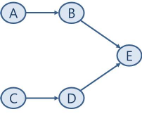
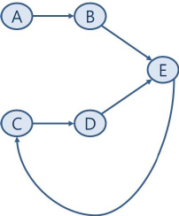
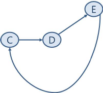

Enhancing lockdep with crossrelease
However, this facility is only applicable to typical locks, such as spinlocks and mutexes, which are normally released within the context in which they were acquired. Under that assumption, the lockdep implementation becomes simple but its capacity for detection is limited, with the result that it cannot find all possible deadlocks. In particular, synchronization primitives like page locks or completions, which are allowed to be released in any context, also create dependencies and can cause a deadlock. So lockdep should track these locks to do a better job; it would be useful for these locks as well if we were able to identify dependencies created by them. The proposed "crossrelease" feature provides a way to do that.
A page lock is used to ensure exclusive access to a page structure; it is allowed to be released in a context other than that in which it was acquired. For example, a page lock could be acquired in process context, then released in software interrupt context after the event it is waiting for has occurred. With the proposed crossrelease feature, the page-lock-related deadlock in the following example can be detected, which cannot be done by current lockdep.
CONTEXT X CONTEXT Y CONTEXT Z mutex_lock(A) lock_page(B) lock_page(B) mutex_lock(A) /* DEADLOCK */
mutex_unlock(A)
unlock_page(B) /* acquired by X */unlock_page(B) mutex_unlock(A)
In this example, Y acquires the mutex A, then waits for B (a page lock) while holding A. Z, which can release B, is waiting for A; since A is held by Y, Z is blocked and cannot release B. In other words, both Y and Z are waiting for events which can never happen. It's a deadlock.
How can we detect that kind of deadlock? Let's see the way starting from lockdep fundamentals.
Lockdep fundamentals
A deadlock occurs when a context is waiting for an event to happen, but that event is impossible because another context that can trigger the event is also waiting for another event to happen, and that second event is also impossible due to the same reason.
A dependency might exist between two waiters and a deadlock might happen due to an incorrect relationship between dependencies. Thus, we have to define what a dependency is first. A dependency exists between if:
- There are two waiters waiting for each event at a given time.
- The only way to wake up each waiter is to trigger its event.
- The ability for one to be woken up depends on whether the other can.
If any partial set of dependencies forms a loop, for example, "A->B" and "B->A" (where "A->B" means that event A depends on event B), then it might lead to a deadlock since no waiter can meet its condition to wake up. Thus, detecting circular dependencies is a key to detecting the possibility of a deadlock. Precisely speaking, a dependency is one between whether a waiter for an event can be woken up and whether another waiter for another event can be woken up. However from now on, we will describe a dependency as if it's one between an event and another event for simplicity. The purpose of lockdep is to track these dependencies in a graph and identify situations where circular dependencies are created.
For example, consider a graph built by lockdep that looks like:
In this diagram, each node is a specific lock class, and the arrows indicate dependencies between those locks. Lockdep will add a dependency into the graph whenever a new dependency is detected. For example, it will add a dependency "E->C" when a new dependency between lock E and lock C is detected. Then the graph will be:

This graph contains a subgraph which demonstrates a circular dependency:

This is the sort of condition under which a deadlock might occur. Lockdep reports it on detection after adding a new dependency.
What crossrelease does
Detecting and adding dependencies into the graph is important for lockdep to work; adding a dependency is the opportunity to check whether it might cause a deadlock. The more dependencies are added, the more thoroughly it can work. Therefore, lockdep has to do its best to add as many true dependencies as possible into the graph. By relaxing the assumption that locks must be released within their acquisition context, lockdep can add more dependencies reflecting how new types of locks, such as page locks or completions, are used.
Any dependency, for example "A->B", can be identified only in the context where A is released. That is not a problem for typical locks, because each acquisition context is same as its release context, thus lockdep can determine the dependencies at acquisition time. However, for "crosslocks" (those released in a different context), lockdep cannot make the decision in the acquire context but has to wait until the release context is finally identified. Therefore, lockdep has to queue all acquisitions which might create dependencies until the decision can be made. In this way, true dependencies can also be identified even for crosslocks.
How crossrelease works
As described above, lockdep queues all acquisitions until their true dependencies can be identified, and then adds the dependencies into the graph in batches. We call this new step "commit", which is the key for the crossrelease feature to work. Lockdep works well even without commit for typical locks. However, the commit step is necessary once crosslocks are involved, until all outstanding crosslocks are released. With the introduction of commit, lockdep performs three steps: acquisition, commit, and release. What lockdep does in each step is:
- Acquisition: For a typical lock,
lockdep does what it originally did and queues the lock so that
lockdep can check dependencies using it at the commit step.
Crosslocks are added to a global linked list so that lockdep can
check dependencies at the commit step.
- Commit: No action is required for typical locks. For crosslocks,
lockdep adds true dependencies using the data saved at the
acquisition step.
- Release: No changes are required for typical locks. When a crosslock is released, lockdep just removes the crosslock from the linked list.
By queuing data properly and performing the commit step, lockdep is able to track dependencies created by both typical locks and crosslocks.
Conclusion
Detecting a deadlock (or the possibility of one) involving locks that are allowed to be released in any context may look impossible, but it's not. The crossrelease feature is designed to do deadlock detection in a more general way. So both typical locks and crosslocks can be handled by the feature. However, since the assumption that locks are released within their acquisition context makes the lockdep implementation simple and efficient, the original algorithm using this assumption is preferred when possible. However, we cannot avoid using the crossrelease feature if we want to make lockdep also work for crosslocks.
Crossrelease makes lockdep able to handle more dependencies, which
cannot be done by the lockdep implementation. Yet, there might possibly be more
dependencies that cannot be handled even by crossrelease. If so, we will
have to make the additional ones work by enhancing crossrelease
or introducing another feature. Currently, crossrelease cannot
identify some dependencies between two crosslocks since it's a rather
complex problem. Work on that issue is currently in progress.
| Index entries for this article | |
|---|---|
| Kernel | Lockdep |
| GuestArticles | Park, Byungchul |